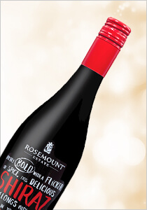

澳洲老窖塔明娜麗絲玲白酒
Australia Hunter Valley Old Winery Traminer-Riesling white
價格：$489
產品編號：07-04
產品總數：66 瓶
每人限購：4 瓶

T大評分：

一絲微甜，但有一絲甜味不過頭，非常清爽，帶有白桃、西洋梨風味，香氣典雅，火鍋良伴。
地區：獵人谷
適合搭配：


葡萄品種：格烏茲塔明娜、麗絲玲
特色說明：
具有明亮的淺金黃色澤，融合兩款香氣豐沛的品種，濃郁的荔枝、柑橘等果香調性，玫瑰花瓣及小白花等氣息點綴，香氣繽紛炫麗。口感清脆爽 口，尾韻流露出細膩的香料芬芳。
紐西蘭秘玉蘇維濃白酒
New Zealand Marlborough Secret Stone Sauvignon Blanc white
價格：$509
產品編號：12-18-02
產品總數：240 瓶
每人限購：12 瓶
T大評分：
青青大草原+芭樂的風味，很典型，佐台式清蒸魚、活燙蝦、白灼透抽。

徐培芬 / Vivian評分：

清爽的酸度，熱帶水果和芭樂的香氣明顯，適合搭生猛海鮮類的料理。
聶汎勳 / Nien評分：
經典紐西蘭的蘇維濃白酒。
曾孟翊 / Xavier評分：
草本風格，多酸，可搭配開胃菜、海鮮、中式料理、辛辣料理。
地區：馬爾堡
適合搭配：
葡萄品種：白蘇維濃
特色說明：
新鮮的柑橘果香，口感充滿活力，鮮明的柑橘果味，尾韻清爽。
澳洲 ABD 麥克拉倫谷驢拉車紅酒
Australia McLaren Alpha box & Dice Kit & Kaboole red
價格：$485
產品編號：11-09-01
產品總數：90 瓶
每人限購：5 瓶
聶汎勳 / Nien評分：
可口易飲，充滿活力，香氣討喜，果香奔放，太妃糖、皮革、辛香料、甘草、香草等多層次香味，複雜度夠，酸度足，餘韻均衡。
曾孟翊 / Xavier評分：
紅色莓果和花卉的香氣，飽滿優雅。
地區：麥克拉倫谷
適合搭配：

葡萄品種：蒙特普爾恰諾、卡本內蘇維翁、巴貝拉。
特色說明：
紅櫻桃和淡淡辣椒的香氣，口感均衡，易飲。
澳洲羅絲蔓夏多內白酒
Australia Rosemount Meal Matcher Chardonnay white
澳洲香桐汽泡酒限量瓶
Australia CHANDON Brut limited edition sparkling
澳洲ABD 阿得雷德丘D骨紅酒
Australia Adelaide Alpha box & Dice Dead Wine Maker Society red
澳洲ABD 巴羅莎谷棕櫚樹希哈紅酒
Australia Barossa Palmetto Shiraz red

澳洲奔富庫濃格希哈紅酒
Australia Penfolds Koonunga Hill Shiraz red

澳洲羅絲蔓希哈紅酒
Australia Rosemount Meal Matcher Shiraz red
紐西蘭秘玉黑皮諾紅酒
New Zealand Marlborough Secret Stone Pinot Noir red
如欲訂購請洽 0809-036-888 客服專線，並告知產品編號與數量，訂購完成後 2 天 ，請至家樂福天母店出示身分證領取並完成付款。